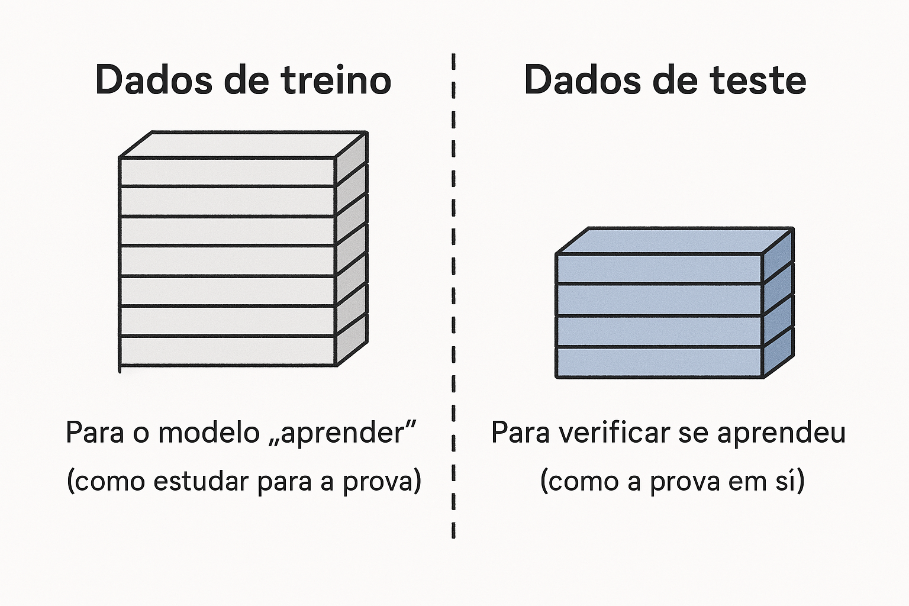
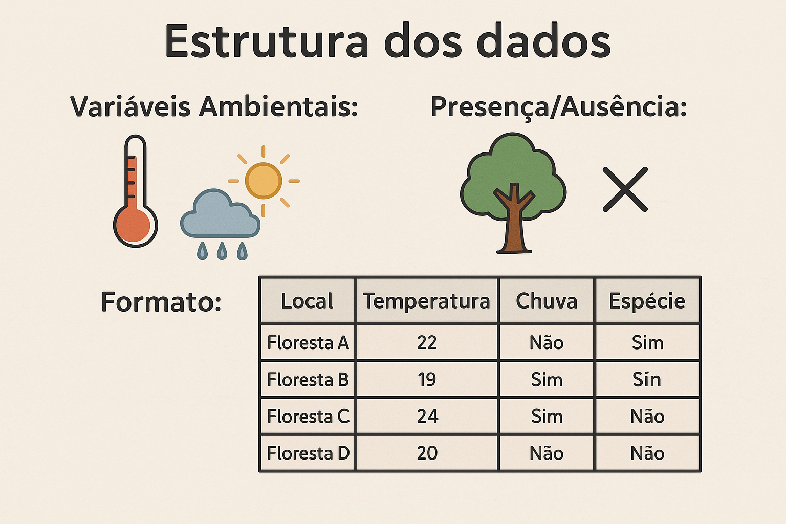
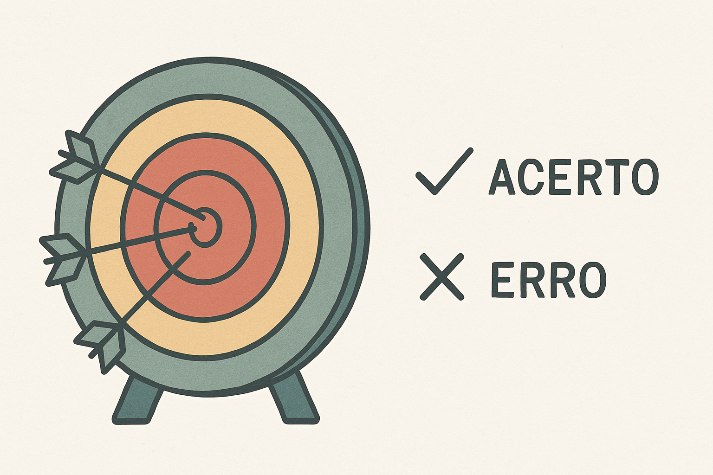
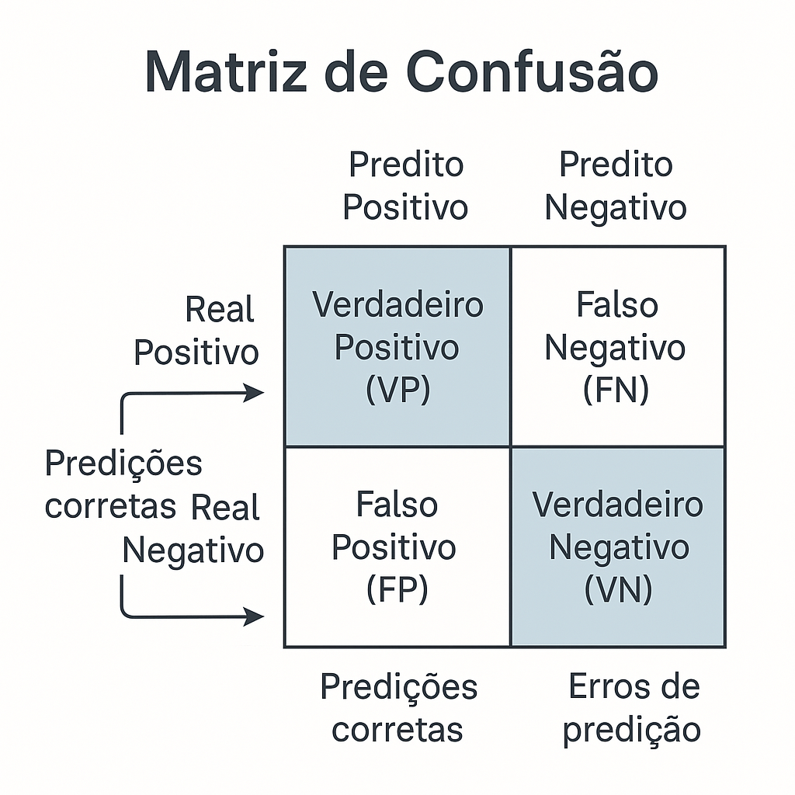

Entendendo Resultados de Modelos
Conceitos Básicos
Disciplina: Mudanças Climáticas
Professor: Pedro Higuchi
O que vamos aprender
- Por que avaliar modelos
- Números que indicam se um modelo é bom
- Gráficos e tabelas importantes
- Exemplos práticos
Por que avaliar modelos?
Avaliar um modelo é como "testá-lo" antes de usar.
Sem avaliação, não sabemos:
- Se podemos confiar nas previsões
- Onde o modelo funciona melhor
- Se vale a pena usá-lo
Analogia: A Prova Escolar
- Estudante (modelo) faz a prova
- Professor (cientista) corrige
- Nota (métricas) mostra o desempenho
- Diferentes questões revelam diferentes habilidades
Como testamos um modelo?
Dividimos nossos dados em dois grupos:

Estrutura dos Dados
Antes de dividir os dados em treino e teste, veja como organizamos as informações:
- Variáveis Ambientais: Como temperatura e chuva
- Presença/Ausência: Onde a espécie está ou não
- Formato: Tabelas com locais e características
Exemplo: Dados de uma floresta com diferentes espécies e condições climáticas.

Como testamos um modelo?
- O modelo faz previsões para os dados de teste
- Comparamos as previsões com as respostas corretas
- Calculamos números que mostram o desempenho
Acurácia
Acurácia é a medida de quão frequentemente o modelo está correto em todas as suas previsões.
Exemplo: Se o modelo fez 200 previsões e acertou 170 delas, a acurácia é de 85%.
Fórmula: \(\text{Acurácia} = \frac{\text{Verdadeiros Positivos} + \text{Verdadeiros Negativos}}{\text{Número Total de Casos}}\)


Tabela de Acertos e Erros
A matriz de confusão mostra os tipos de acertos e erros:
Tabela de Acertos e Erros
(45 vezes)
Verdadeiro Negativo
(12 vezes)
Falso Positivo
(3 vezes)
Falso Negativo
(40 vezes)
Verdadeiro Positivo
Erro Tipo 1: Falso Positivo
O modelo diz que a espécie está presente, mas na verdade não está.
Exemplo: Dizer que há Erva-mate em uma área onde não existe.
Erro Tipo 2: Falso Negativo
O modelo diz que a espécie não está presente, mas na verdade está.
Exemplo: Não identificar uma população importante de uma espécie ameaçada.

Precisão
Precisão responde à pergunta: "Das áreas onde o modelo previu presença da espécie, quantas realmente têm a espécie presente?"
Exemplo: Se o modelo previu que a espécie de árvore está presente em 100 locais, e ela realmente está presente em 80 desses locais, a precisão é de 80%.
Fórmula: \(\text{Precisão} = \frac{\text{Verdadeiros Positivos}}{\text{Verdadeiros Positivos} + \text{Falsos Positivos}}\)
Sensibilidade (Recall)
Sensibilidade responde à pergunta: "Das áreas onde a espécie realmente está presente, quantas foram corretamente identificadas pelo modelo?
Exemplo: Se a espécie de árvore está realmente presente em 150 locais, e o modelo conseguiu identificar corretamente 120 desses locais, o recall é de 80%.
Fórmula: \(\text{Sensibilidade} = \frac{\text{Verdadeiros Positivos}}{\text{Verdadeiros Positivos} + \text{Falsos Negativos}}\)
AUC: Nota Geral do Modelo
O que é AUC? "Área Sob a Curva" - mede a qualidade do modelo
- AUC = 0.5: Modelo aleatório (linha diagonal)
- AUC = 1.0: Modelo perfeito
- Interpretação: 0.7-0.8: Aceitável | 0.8-0.9: Bom | >0.9: Excelente
Um AUC de 0.85 significa que o modelo tem 85% de chance de classificar corretamente entre uma área com a espécie e uma sem.

A área sombreada representa o valor de AUC
O que influencia o modelo?

A importância das variáveis mostra:
- Quais fatores ambientais mais afetam a espécie
- Valores mais altos = mais importantes
Exemplo de Importância
Para uma espécie de árvore:
- Temperatura do inverno: 60%
- Chuva na estação seca: 25%
- Altitude: 10%
- Outros fatores: 5%
Isso mostra que a espécie é muito sensível à temperatura do inverno!
Como a espécie responde ao ambiente?
As curvas de resposta mostram:
- Como a probabilidade de encontrar a espécie muda de acordo com cada variável ambiental
- Quais são as condições preferidas pela espécie
- Limites ambientais que a espécie pode tolerar

Tipos de Curvas de Resposta
As curvas de resposta mostram como a probabilidade de presença da espécie varia conforme mudanças em cada variável ambiental
Curva em sino (unimodal):

Indica que a espécie tem um valor ótimo preferido, com declínio de probabilidade tanto acima quanto abaixo desse valor.
Exemplo: Araucária prefere temperaturas entre 12-18°C, não tolerando nem muito frio nem muito calor.
Curva crescente (linear):

Mostra que a probabilidade de presença aumenta continuamente conforme a variável aumenta, sem atingir um platô.
Exemplo: Algumas espécies de floresta tropical que se beneficiam de mais precipitação, sem um limite superior claro.
Importante: Estas curvas ajudam a definir limites de tolerância e condições ideais para conservação e manejo de espécies.
Dicas para entender resultados
O que buscar
- Acurácia > 70%
- AUC > 0.8
- Fatores importantes que fazem sentido
Cuidados
- Não confie em apenas um número
- O modelo é uma simplificação
- Use junto com seu conhecimento
Aplicações no mundo real
Conservação de espécies ameaçadas:
- Identificação de áreas prioritárias para proteção
- Exemplo: Mapeamento de habitats potenciais para o lobo-guará no Cerrado
Restauração florestal:
- Seleção de espécies adequadas para cada local
- Exemplo: Escolha de árvores nativas para recomposição da Mata Atlântica
Mudanças climáticas:
- Previsão de áreas futuras de ocorrência de espécies
- Exemplo: Identificação de refúgios climáticos para a Araucária no sul do Brasil
Silvicultura:
- Determinação de zonas adequadas para plantio comercial
- Exemplo: Áreas ótimas para plantio de um clone de Eucalipto
Controle de espécies invasoras:
- Previsão de áreas suscetíveis à invasão
- Exemplo: Monitoramento de áreas propensas à invasão por pinus em campos nativos
Saúde pública:
- Mapeamento de riscos de doenças transmitidas por vetores
- Exemplo: Distribuição potencial do mosquito Aedes aegypti e risco de dengue
Caso real: O ICMBio utiliza SDMs para redesenhar áreas de conservação e planejar corredores ecológicos para espécies ameaçadas da Mata Atlântica.
Resumo
- Acurácia = % geral de acertos
- Matriz de confusão = tipos de acertos e erros
- AUC = nota geral do modelo
- Importância das variáveis = o que afeta a espécie
- Curvas de resposta = como a espécie responde